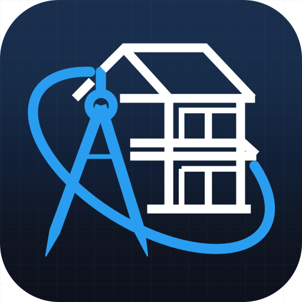

Civil
Draft
مخططات معمارية · جارٍ التحميل…
CivilDraft
٠
مليمتر · لا يتحرّك شيء إلا بأمرك
Alt دلائل · Esc يلغي · F1 مساعدة · F7 فحص
✕
لوحة رسمٍ نقطية. الأوامر كلّها متاحة من سطر الإدخال وقوائم الشريط.
☰
⤢
✕
أداة:
يُحمَّل CivilDraft… إن بقي هذا السطر فالوحدات لم تُحمَّل. افتح وحدة التحكّم لترى الملفّ المفقود.
✕
CivilDraft يحتاج جافاسكربت.
الواجهة كلّها تُبنى في المتصفّح، ولا خادمَ يرسمها. شغّل جافاسكربت ثم أعِد التحميل.
وإن كنت تفتح الملفّ من القرص مباشرةً (
file://
) فوحدات ES لا تُحمَّل منه — شغّله بخادمٍ محلّي:
npm run serve